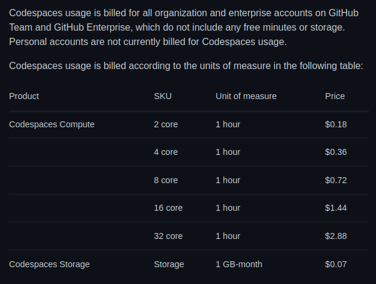

やっと Codespaces が使える

- パソコンに Visual Studio Code を導入する（再チャレンジ）
- Go と VS Code
- Markdown と VS Code
- Java と VS Code
- やっと Codespaces が使える ← イマココ
さて，独り GitHub Team も契約したし，よーやく Codespaces が使えるようになったよ。
今のところ Codespaces は GitHub Team または GitHub Enterprise Cloud のメンバで利用できる。 2022-04-23 時点の料金（米ドル建て）は以下の通り。

ちなみに，使いすぎないよう上限を設定することも可能。
Codespaces クラウドに立つ
Codespaces の起動にはまず，ブラウザでリポジトリ・ページを開き，[Code] ボタンを押下する。
{kind=link}
[Create codespace on master] ボタン押下で Codespaces のインスタンス生成が始まる。
上手く起動すればこんな感じに表示される。
{kind=link}
拡張機能も普通に入れられる。
{kind=link}
設定はユーザごとに保持して同期させることもできるようだ。
Go が動くぞ！
Codespaces 上のターミナルで試しに Go コンパイラを動かしてみたら普通に動いた。
{kind=link}
GitHub Codespaces 拡張機能
VS Code の拡張機能に GitHub Codespaces というのがあって，これを使うとローカルの VS Code 上で Codespaces のリソースにアクセスできる。
コマンドパレットから Codespaces: Connect to Codespace を選択すると生成済みのインスタンスの一覧が表示されるので，選択して接続すると Codespaces に接続した VS Code が起動する。
{kind=link}
パソコンで作業する場合はこっちのほうがいいかもねぇ。
Andorid タブレットでも動いた
{kind=link}
おわ。 ターミナルの状態も共有できるのか。 凄いな。
ちなみに Android の Firefox では Codespaces を起動できなかった。 冷遇されてるなぁ（笑）
後始末
Codespaces を終了する場合はコマンドパレットから Codespaces: Stop Current Codespace を選択して明示的に停止させること。
まぁ，最悪でも30分非活性状態なら自動的に停止するらしいけど。
Codespaces のインスタンスはリポジトリごとに生成されるのでご注意を。 また，使わなくなったインスタンスはマメに削除することをお勧めする。 インスタンスの削除は “Your codespaces” でできる。
{kind=link}